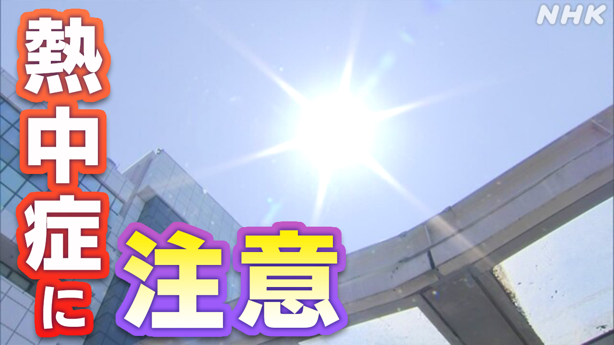

最新ニュース
1️⃣ 暑い日が続く 熱中症に気をつけて

15日は、北海道から九州までの多くの場所で、気温が上がりました。
熊本県や広島県、佐賀県、山口県などでは、30°C以上になった所がありました。7月のように暑くなりました。
気象庁によると、16日からは東北地方から九州までの多くの場所で、もっと気温が高くなりそうです。19日ごろまで暑い日が続きそうです。
今の季節は、体が暑さに慣れていません。エアコンを使ったり、よく水を飲んだりして、熱中症にならないように気をつけてください。
2️⃣ 美空ひばりさん 70年前の曲が見つかった
美空ひばりさんが70年前に歌った曲が見つかりました。
美空ひばりさんは、子どものころに歌手になって、日本を代表する人気の歌手になりました。
1989年に52歳で亡くなるまで、たくさんの曲を出しました。
ひばりさんが18歳の時に歌った曲のテープが、レコード会社の倉庫から見つかりました。
「二人きりで」という、ゆっくりとした曲で、レコードなどになっていませんでした。
専門家は「この曲を聞くと、美空ひばりさんがいろいろな曲を歌うことができたことが分かります」と話していました。
3️⃣ 選挙のときにうその情報がSNSに出ないように法律を作る
選挙のときに、うそや悪口をSNSに出すことが問題になっています。
14日、与党と野党が話し合って、この問題をなくすための法律を作りたいと言いました。
うそでお金をもうける SNSを止めることや、AIを使ったときに「 AIを使った」と書く決まりを作ることなどを考えています。
今の国会で法律を作りたいと考えています。
4️⃣ サッカーワールドカップ 日本代表26人が決まった
サッカーのワールドカップが、来月、始まります。
15日、森保一監督が日本代表のメンバー26人を発表しました。
久保建英選手や堂安律選手など、ヨーロッパで活躍する選手が多くなっています。
けがをしていたキャプテンの遠藤航選手や、39歳の長友佑都選手も選ばれました。長友選手は、日本の選手で初めて、5回目のワールドカップです。
イギリスで活躍する三笘薫選手は、今月、けがをしたため選ばれませんでした。
森保監督は「世界で勝つために最高の26人を選びました」と話しました。
大会は、アメリカとカナダ、メキシコの3つの国で行います。
日本の最初の試合は、日本の時間で来月15日です。アメリカで、オランダと試合をします。
- 〜から
- 〜から〜まで
- 〜まで
- 〜ところ
- 〜以上
- 〜がある / 〜がいる
- 〜になる
- 〜など
- 〜ように
- 〜によると
- 〜そうだ
- 〜ごろ
- 〜ている / 〜でいる
- 〜てください / 〜でください
- 〜ならない
- 〜前に
- 〜ころ
- 〜という
- 〜こと
- 〜ことができる
- 〜ため
- 〜や〜など
- 〜ため(に)
vebaev.github.io
Generated: 2026-05-15 12:55:01 UTC